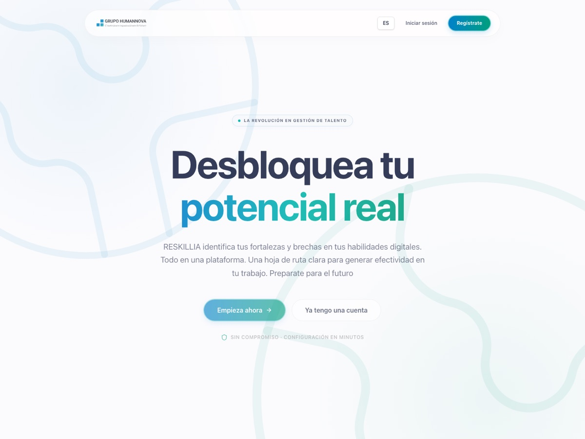
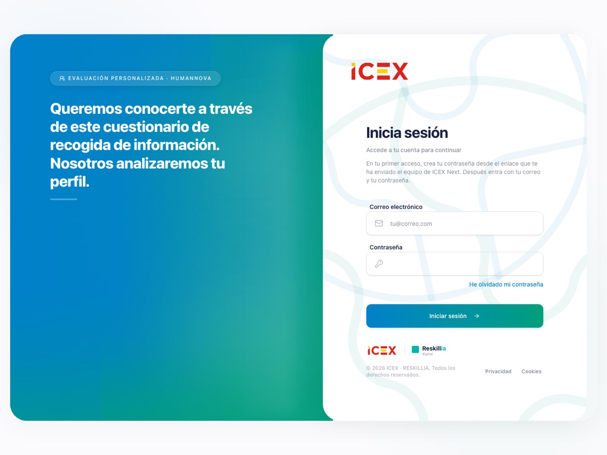

Reskillia and ICEX Next
One codebase, two products for Humannova
Reskillia assesses a team's digital skills against DigComp 2.2, the European framework. Each person uploads a CV; Gemini picks seven competences with a target level, writes the questions and scores the answers. The result is a radar of expected against achieved, as a PDF.
ICEX Next is the same codebase cut down for a client who needed privacy first: no AI and no public sign-up. The team invites each person, who sets a password, accepts the policy and submits a CV and a questionnaire.
- Role
- Full-stack developer at Humannova
- Stack
- Next.js 16 · React 19 · Tailwind 4 · Supabase · Gemini · Docker
- Outcome
- Both live. Reskillia for companies, ICEX Next for the ICEX programme


Underneath
- Kept
- Supabase Auth, personal data encrypted with AES-256-GCM, RLS policies in PostgreSQL, Docker
- Added for ICEX
- Local OCR for scanned CVs; questionnaires versioned per profile, with drafts migrated between versions; every privacy acceptance stored with its version and date; Excel export
- Removed for ICEX
- Gemini, public sign-up